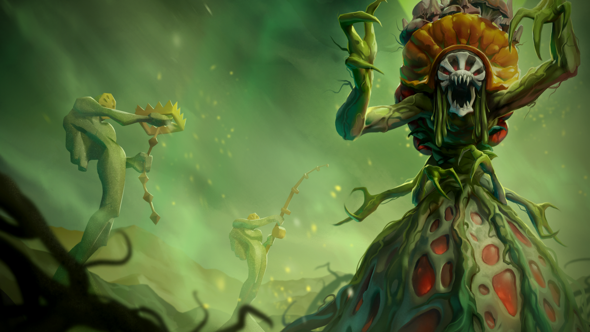
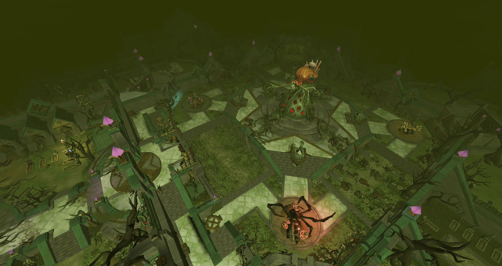
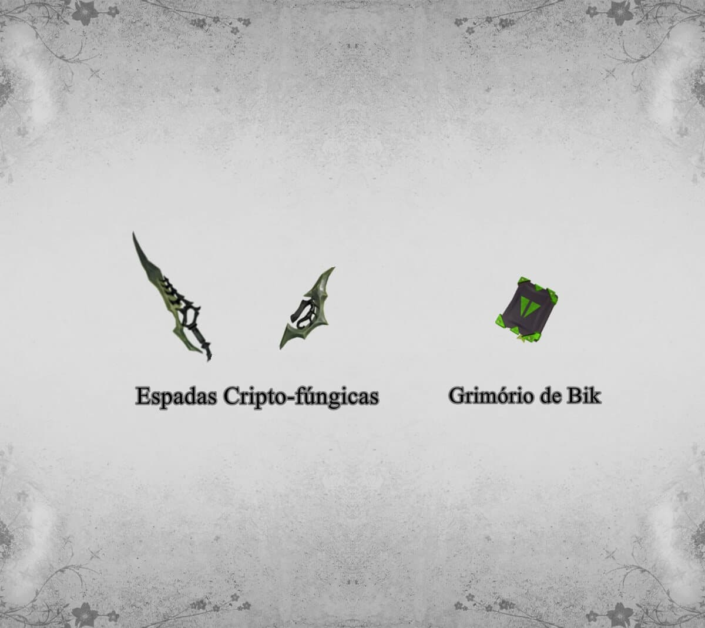

Atualizado em 20 jan 2022 - 03:03
Croesus
O culto de Bik realizou uma expedição ao Oceano Inquieto, e retornou a Senntisten com uma espécie muito incomum de fungo. Eles pretendiam usá-lo como uma arma biológica contra os inimigos. Em seus laboratórios, eles foram capazes de transformar o fungo em um ser que eles chamaram de Croesus e experimentaram nele, alimentando-o de escravos e evoluindo-o continuamente. Croesus, agora ainda mais forte do que antes, saiu da contenção e conseguiu infectar um dos distritos da cidade. Senntisten foi quase exterminada, onde se encontra em quarentena, sem novos hospedeiros para se infectar e se sustentar, a evolução de Croesus foi contida.
Onde enfrentá-lo: Cemitério de Senntisten.

Possíveis recompensas:
